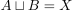
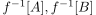
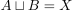
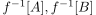

Zusammenhang eines topologischen Raumes als Isomorphieinvariante
1. Satz
Zusammenhang ist eine Isomorphieinvariante
2. Beweis
Seien  und
und  topologische Räume und
topologische Räume und  ein Homeomorphismus.
Angenommen
ein Homeomorphismus.
Angenommen  ist nicht zusammenhängend, so existieren nichtleere disjunkte offene Mengen
ist nicht zusammenhängend, so existieren nichtleere disjunkte offene Mengen  mit .
Ferner sind  offen und da
mit .
Ferner sind  offen und da  welldefined ist gilt $f-1[A]
welldefined ist gilt $f-1[A]
Die Rückrichtung folgt analog aus der stetigen, bijektiven Umkehrabbildung